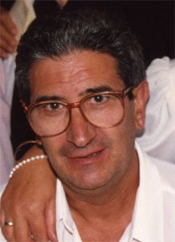

Conrado Pérez Morante & María del Pilar Martín Mateos
Conrado Pérez Morante & María del Pilar Martín Mateos  Conrado Pérez Morante & María del Pilar Martín Mateos
Conrado Pérez Morante & María del Pilar Martín Mateos  Conrado Pérez Morante
Conrado Pérez Morante
This page is within a frameset. View the entire genealogy report of family Conrado Pérez Morante & María del Pilar Martín Mateos, or surname index or report summary.
Ancestry Research Software.
© 2006 GenoPro Inc. All Rights Reserved.